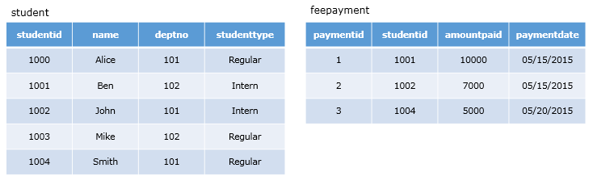

Consider the following student and feepayment tables.

The administration department of a university wants to know the details of students who have paid the semester
fee along with the date of payment and amount paid.
Observation
Do you think all the required data is available in a single table?
How many tables would need to be referred to get this data?